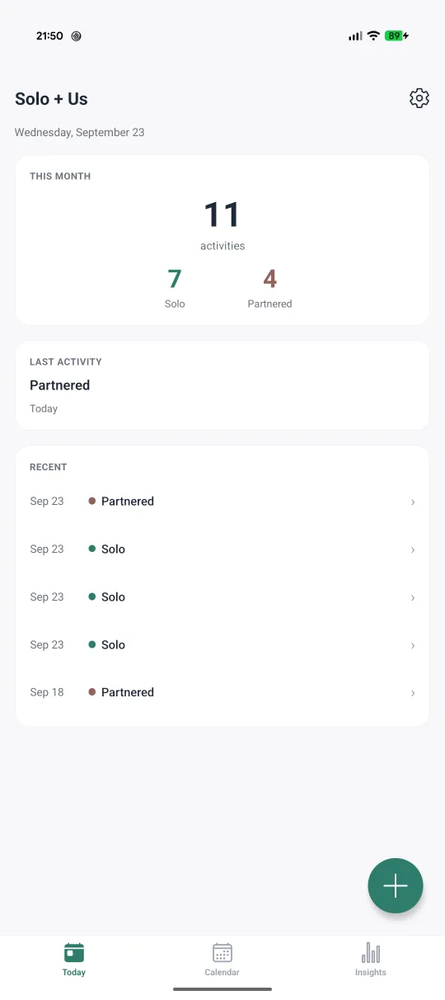

Record in seconds
One tap for Solo or Partnered, with Undo right there and the date and time editable afterwards.
Solo + Us is a private log for sex and self-pleasure, whether you are on your own or with a partner. Your records are stored on your device in an encrypted database. There is no account to create, no server to sync with, and no advertising.
Free on Google Play. For adults aged 18 and over.
Choose Solo or Partnered and it is logged, with Undo right there. Details are optional and never asked for while recording, and the date and time can be edited afterwards.

One tap for Solo or Partnered, with Undo right there and the date and time editable afterwards.
Protection, orgasm, duration, mood before and after, and a free-text note. All optional, and never asked for while recording.
A month at a glance, a calendar view, and totals with your average interval between entries.
Export a full JSON backup or a CSV for your own analysis, and import a backup to restore.
Save your log to Health Connect as sexual activity entries, alongside your other health data. It is off by default, and you turn it on in Settings.
Only the date, time and whether protection was used are saved, and solo and partnered records are not distinguished. Other apps can read these entries if you allow them to in Health Connect.
Your records are stored on your device in an encrypted database. There is no account to create and no server to sync with.
App Lock with your device's fingerprint, face or passcode, a hidden preview in Recent Apps, and optional screenshot blocking.
Real screens from the app.


Free on Google Play.